Enjeux de l’information, impact de la désinformation.
Antonin Atger | Raisonner mieux.
DéfinitionDefinition
Qu'est-ce qu'une Fake News ?What is a fake news story?
Une information qui est en contradiction avec l'état actuel des connaissances sur un sujet, partagée parfois de bonne foi, même si on ne peut pas la vérifier par nous-même.A piece of information that contradicts the current state of knowledge on a topic, sometimes shared in good faith, even when we can't verify it ourselves.
Différentes « Fake News »Different kinds of "fake news"
MésinformationMisinformation
Une infox que l'on partage… mais que l'on croit vraie.Fake news we share… while believing it's true.
DésinformationDisinformation
Une infox que l'on partage… en sachant qu'elle est fausse.Fake news we share… while knowing it's false.
« Informations fallacieuses » (misleading news) : beaucoup moins identifiables qu'une Fake News pure et dure, et bien plus partagées, y compris par tous les médias."Misleading news": far less identifiable than outright fake news, and shared much more widely, including by the media themselves.
Le réflexe : vrai, ou faux ?
VRAI
FAUX
Quels sont les critères pour valider l'information ?What criteria help us validate information?
11
Fiabilité de la sourceReliability of the source
22
Fiabilité de l'interlocuteurReliability of the speaker
33
Niveau de preuvesLevel of evidence
44
Plusieurs sources fiables en parlentSeveral reliable sources report it
55
Crédibilité de l'informationCredibility of the information
66
Commentaires et critiques de l'informationComments and criticism of the information
Mais attention…But be careful…
Mais NOTRE perception du vrai et du faux dépend de beaucoup de paramètres
Qu’est-ce que je juge crédible ?
Ce que je juge crédible dépend de ce que je sais déjà,
de qui me le dit,
et de ce que j’ai envie de croire.
Crédible ≠ Vrai
Une information peut être parfaitement crédible et complètement fausse. Et l’inverse aussi.
Vrai ou faux ? (2/7)True or false? (2/7)
Le plateau de Gizeh se trouve en Égypte.The Giza plateau is located in Egypt.
Vrai ou faux ? (3/7)True or false? (3/7)
Le président a rencontré un alien.The president met an alien.
Vrai ou faux ? (4/7)True or false? (4/7)
Le soleil est une étoile.The sun is a star.
Vrai ou faux ? (5/7)True or false? (5/7)
L'étoile du berger est une étoile.The "shepherd's star" is a star.
Vrai ou faux ?
Les chauves-souris sont aveugles.
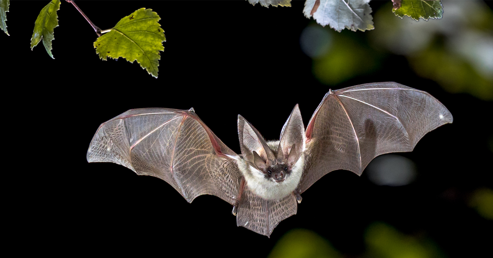
Réponse : Faux. Elles voient, et complètent leur vue par l’écholocation.
Vrai ou faux ?
Les pieuvres ont trois cœurs.
Réponse : Vrai. Un cœur principal, et un pour chacune de leurs deux branchies.
Vrai ou faux ?
Le terme « sushi » désigne « poisson cru » en japonais.
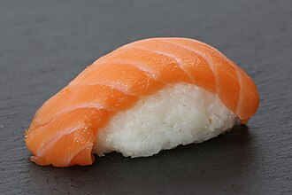
Réponse : Faux. « Sushi » désigne le riz vinaigré. Le poisson cru, c’est le sashimi.
Vrai ou faux ?
L’eau tourbillonne dans un sens différent selon l’hémisphère (effet Coriolis).
Réponse : Faux à l’échelle d’un lavabo : la force de Coriolis y est négligeable devant la forme du bac et le mouvement initial de l’eau.
Vrai ou faux ?
Nous avons créé des chats fluorescents.
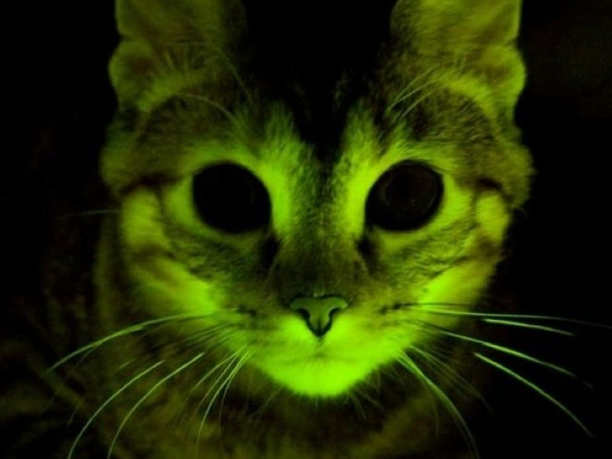
Réponse : Vrai. Des chats transgéniques fluorescents ont été produits en laboratoire, pour la recherche sur le sida félin.
Vrai ou faux ?
La mousse sur les arbres pousse toujours au nord.
Réponse : Faux. Elle pousse du côté le plus humide, qui dépend du relief, du vent et de l’ombre.
Vrai ou faux ?
Les pyramides ont été construites par des extra-terrestres.
Réponse : Faux. Et c’est une théorie du complot de plein droit : elle suppose une dissimulation générale des égyptologues.
Vrai ou faux ?
Les pyramides ont été construites par des esclaves.
Réponse : Faux, au moins en partie : les fouilles montrent des ouvriers logés, nourris et soignés, pas des esclaves.
Quelle photo est en IA, quelle photo est réelle ?
Vraie photo, ou générée par IA ?
Vraie photo, ou générée par IA ?
Vraie photo, ou générée par IA ?
Réponse : Celle-ci est une vraie photo. Le plus difficile n’est pas de repérer l’IA : c’est d’accepter qu’on ne sait pas.
2
Au-delà du vrai / faux
La Terre tourne autour du Soleil en 365 jours.
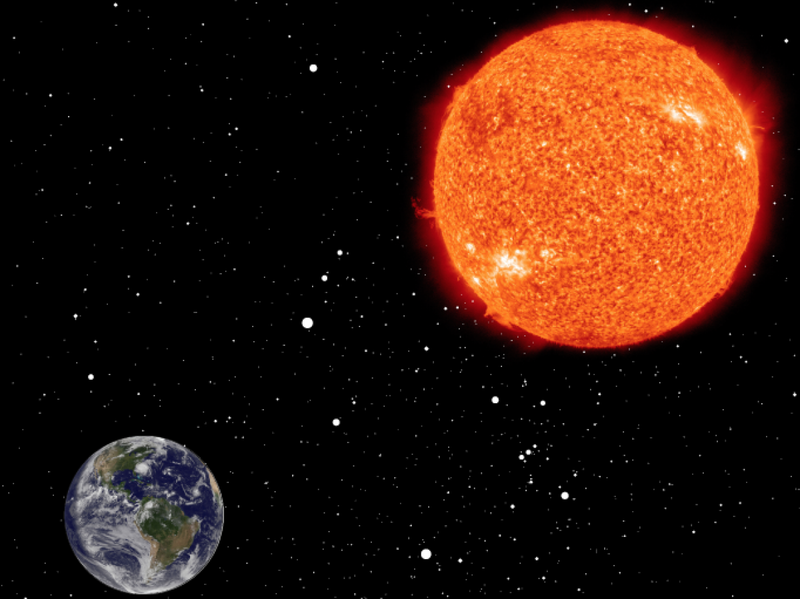
Réponse : Presque : 365,2422 jours. C’est pour cela qu’il existe des années bissextiles. « Vrai » et « faux » ne suffisent pas toujours.
La Terre est ronde.
Réponse : Presque : c’est un géoïde, légèrement aplati aux pôles. L’approximation est utile, mais c’est une approximation.
On ne peut pas respirer et avaler en même temps.
Réponse : Vrai chez l’adulte… mais faux chez le nourrisson, qui peut téter et respirer en même temps. Le contexte change la réponse.
Les chiens ne transpirent pas.
Réponse : Presque : ils transpirent très peu, par les coussinets. Ils se refroidissent surtout en haletant.
Distinguer une vraie information d'une fausse information n'est pas toujours facile !Telling real information from fake isn't always easy!
Et en plus… même nos yeux peuvent nous tromper.And on top of that… even our eyes can fool us.
Regardez bienWatch closely
« Monsieur, c'est mal cadré ! » ."Sir, that's badly framed!" A simple crop is enough to completely change what we think we're seeing.
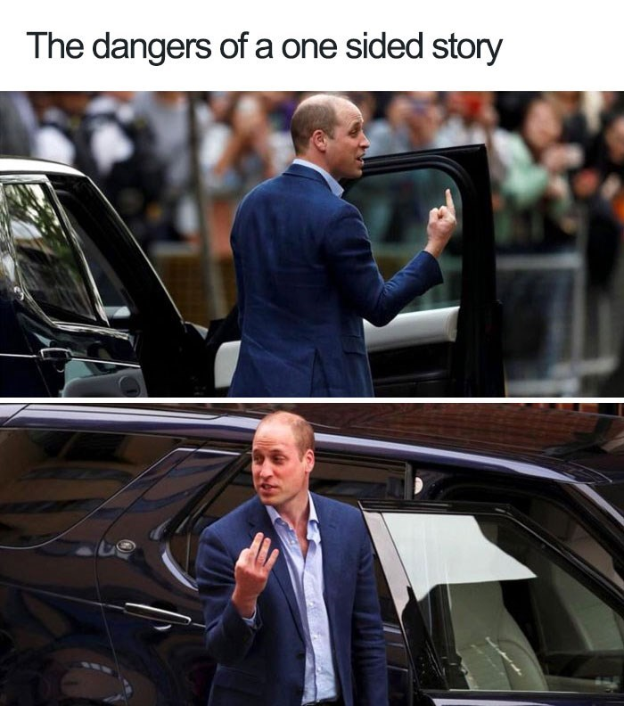
DéfinitionDefinition
Biais de cadrageFraming bias
La manière dont une information est présentée, son « cadre », influence notre jugement, indépendamment du contenu réel de l'information.The way information is presented, its "frame", shapes our judgement, regardless of the actual content.
Test
BFMTV @BFMTVSuivre⋮
💬"J'ai tout perdu"
À 82 ans, Paul va être expulsé de sa maison car ses belles-filles ont décidé de la vendre
M
Martine 🌻@martine_lili · 1 h
Honteux !!! Mettre un monsieur de 82 ans à la rue… Ces belles-filles sont des p*******s sans cœur 🤬
K
Kévin@kev_du_94 · 1 h
Bande de s*****s. J'espère qu'elles vont tout perdre elles aussi
S
Sandrine B.@sandrine_b · 58 min
Le pauvre… 😢 Il a travaillé toute sa vie pour cette maison et ces deux c*******s le jettent dehors
L
Le Vrai Gaulois@vraigaulois · 55 min
Voilà la famille aujourd'hui. Plus aucun respect pour les anciens. Des o*****s, rien d'autre.
J
Juju@juju_off · 52 min
Moi à sa place je les déshérite direct ces m*****s 😤
N
Nathalie G.@nath_g62 · 50 min
Je pleure en voyant ça. Comment on peut faire ça à son beau-père ?? Elles n'ont aucune honte
D
Dédé du 13@dede13 · 47 min
Qu'elles viennent me dire ça en face, les p*****s 👊
S
Sophie@sophie_75 · 44 min
Partagez un max !!! Il faut que tout le monde sache ce que ces v*******s ont fait 🔁
Courage Paul ❤️ Et honte à ces deux c*******s, le karma va les rattraper
L
Lucas@lucas_33 · 35 min
Elles mériteraient d'être expulsées à leur tour, on verra si elles rigolent 😡
K
Karine 🐾@karine_animo · 31 min
Dégoûtée de l'humanité. L'argent, toujours l'argent. Des r******s, ces bonnes femmes.
M
MaxPower@maxpower_off · 28 min
Quelqu'un a leurs noms ? Faut les afficher partout, ces s*****s 😠
B
Brigitte@brigitte_l · 25 min
Pauvre homme… 82 ans !! Où va le monde 😭😭
This newspaper clipping is in French.
This newspaper clipping is in French.
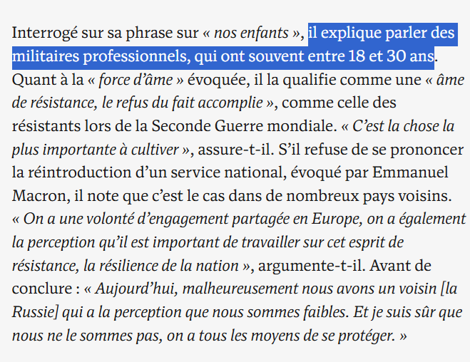
This video is in French.
L’erreur peut se trouver dans l’information,
ou dans notre perception.
Les autres manières de désinformerOther ways to mislead
Simuler la foule, simuler l'opinionFaking the crowd, faking opinion
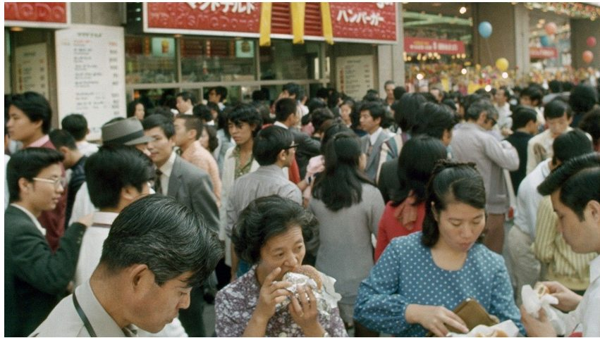
L'AstroturfingAstroturfing
Une technique consistant à simuler un mouvement spontané ou populaire, à des fins politiques ou économiques, pour influencer l'opinion publique.A technique that fakes a spontaneous or grassroots movement, for political or economic ends, to influence public opinion.
« AstroTurf » = la marque de pelouse synthétique utilisée dans les stades, un jeu de mots sur « grassroots movement » (mouvement de la base)."AstroTurf" = the brand of synthetic lawn used in stadiums, a pun on "grassroots movement".
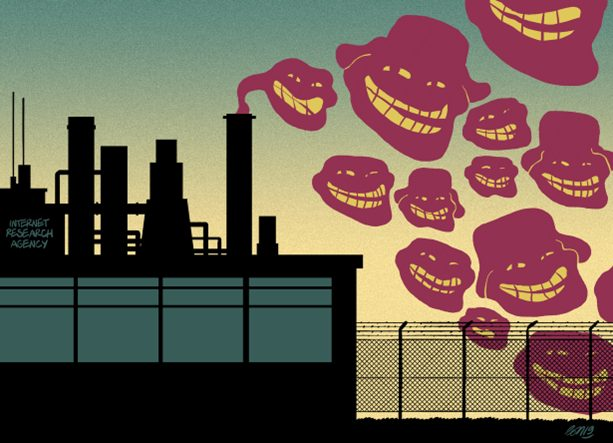
La fabrique du douteThe manufacture of doubt
Une technique à l'origine employée par les industriels (le tabac, en particulier) pour noyer le poisson sur leurs activités, mais elle plaît beaucoup en politique aussi.A technique originally used by industry (tobacco, in particular) to muddy the waters around their activities, but it's also very popular in politics.
InvasionInvasion
Libération du peupleLiberation of the people
Attaque d'un pays souverainAttack on a sovereign country
Historiquement le même paysHistorically the same country
Premiers à attaquerFirst to attack
Légitime défenseSelf-defence
Chaque reformulation successive est un « contre-narratif », pas un mensonge nouveau, juste un mot différent pour le même événement.Each successive reframing is a "counter-narrative", not a new lie, just a different word for the same event.
La Mute NewsMute News
Ne PAS parler de certaines informations, ou PEU en parler.NOT talking about certain information, or barely talking about it.
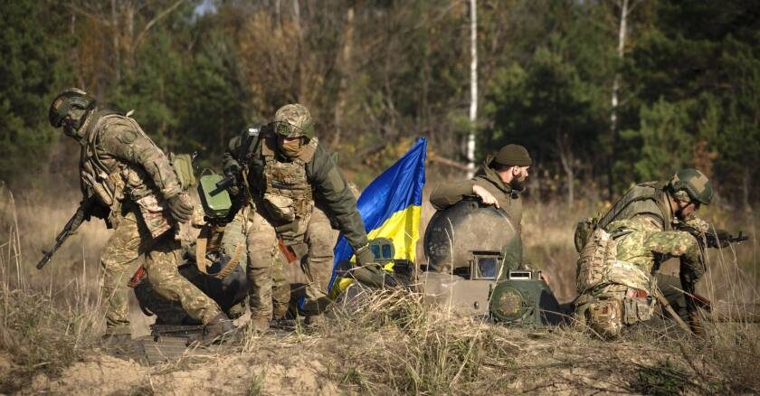
4
Mais alors : pourquoi ?
Mise en bouche : pourquoi tant de radicalité sur les réseaux sociaux ?
Espace d’expression alternatif.
Les gens les plus motivés vont occuper davantage d’espace.
Les personnes refusant ces sujets vont s’éloigner des réseaux.
Les contenus impactants sont les plus viraux.
Le conflit génère de l’engagement.
Certains sujets polarisants sont un CHOIX des plateformes.
Les croix de DavidThe Stars of David
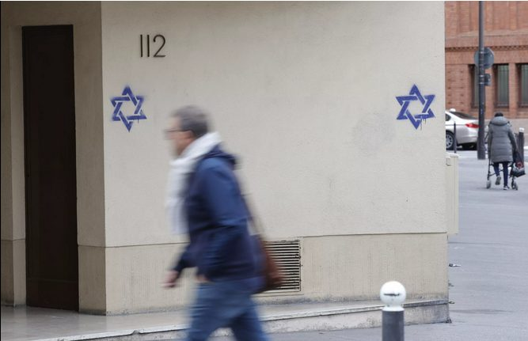
9 sept. 20259 Sep 2025
10 sept. 202510 Sep 2025
Fin sept. 2025Late Sep 2025
20262026
franceinfo · 9 sept. 2025Au moins neuf têtes de cochon ont été découvertes devant des mosquées en Ile-de-France
BFMTV · 9 sept. 2025« Une lâcheté insondable » : Bruno Retailleau fait part de son « indignation » après la découverte de têtes de cochon devant des mosquées
20 Minutes · 9 sept. 2025« L’islamophobie se déchaîne » à cause de Retailleau, accuse Mélenchon
Le Monde · 9 sept. 2025Des têtes de cochon devant plusieurs mosquées, « une nouvelle et triste étape dans la montée de la haine antimusulmane »
BFMTV · 10 sept. 2025Têtes de porc décapitées devant des mosquées : ingérence russe ou action coordonnée de l’ultradroite ?
RTL · 10 sept. 2025Têtes de cochon devant les mosquées : l’ingérence étrangère confirmée, plusieurs suspects en fuite
Le Monde · 27 sept. 2025Têtes de cochon devant des mosquées : l’enquête privilégie la piste du renseignement militaire russe
TF1 Info · 29 sept. 2025Têtes de cochon devant des mosquées d’Ile-de-France : 11 arrestations en Serbie
La Croix · 6 mars 2026Têtes de cochons devant des mosquées en France : trois Serbes condamnés dans leur pays
BFMTV · 20 mars 2026Têtes de cochon devant des mosquées, peinture verte sur des lieux juifs : comment les services secrets russes ont voulu déstabiliser la France
France 24 · 26 mai 2026Têtes de cochon, projets d’ingérence : ce que révèlent des documents sur les opérations russes en France
D'abord la photo ; à chaque flèche, le curseur avance d'une date et les articles de cette période montent. Titres relevés sur les sites le 17/11/2026.
9 sept. 2025 : franceinfo https://www.franceinfo.fr/france/ile-de-france/plusieurs-tetes-de-cochon-decouvertes-devant-des-mosquees-a-paris-et-en-banlieue-bruno-retailleau-denonce-un-acte-d-une-lachete-insondable_7482145.html ; BFMTV https://www.bfmtv.com/police-justice/une-lachete-insondable-bruno-retailleau-fait-part-de-son-indignation-apres-la-decouverte-de-tetes-de-cochon-devant-des-mosquees_AD-202509090508.html ; 20 Minutes https://www.20minutes.fr/politique/4172041-20250909-islamophobie-dechaine-cause-retailleau-accuse-melenchon-apres-decouverte-tetes-cochon ; Le Monde https://www.lemonde.fr/societe/article/2025/09/09/des-tetes-de-cochon-devant-plusieurs-mosquees-une-nouvelle-et-triste-etape-dans-la-montee-de-la-haine-antimusulmane_6640168_3224.html
10 sept. 2025 (le parquet annonce que les têtes ont été déposées par des étrangers repartis à l'étranger) : BFMTV https://www.bfmtv.com/police-justice/tetes-de-porc-decapitees-devant-des-mosquees-ingerence-russe-ou-action-coordonnee-de-l-ultradroite_AV-202509100390.html ; RTL https://www.rtl.fr/actu/justice-faits-divers/tetes-de-cochon-devant-les-mosquees-l-ingerence-etrangere-confirmee-plusieurs-suspects-en-fuite-7900539897
Fin sept. 2025 : Le Monde https://www.lemonde.fr/societe/article/2025/09/27/tetes-de-cochon-devant-des-mosquees-l-enquete-privilegie-la-piste-du-renseignement-militaire-russe_6643121_3224.html ; TF1 Info https://www.tf1info.fr/justice-faits-divers/tetes-de-cochon-devant-des-mosquees-d-ile-de-france-11-arrestations-en-serbie-annonce-l-interieur-2397545.html
2026 : La Croix https://www.la-croix.com/international/tetes-de-cochons-devant-des-mosquees-en-france-trois-serbes-condamnes-dans-leur-pays-20260306 ; BFMTV https://www.bfmtv.com/police-justice/info-bfmtv-tetes-de-cochon-devant-des-mosquees-peinture-verte-sur-des-lieux-juifs-comment-les-services-secrets-russes-ont-voulu-destabiliser-la-france_AN-202603200783.html ; France 24 https://www.france24.com/fr/france/20260526-t%C3%AAtes-de-cochon-projets-d-ing%C3%A9rence-ce-que-r%C3%A9v%C3%A8lent-des-documents-sur-les-op%C3%A9rations-russes-en-france . Les documents de la Social Design Agency (« Report on Operation Pig's Head ») ont été révélés par Le Monde et l'OCCRP le 24 mai 2026.
Le cycle de la polarisationThe polarisation cycle
Le même engrenage se répète, quel que soit l'élément déclencheur (attaque terroriste, incident impliquant des agents étrangers, manifestations nationales…).The same mechanism repeats, whatever the trigger (a terrorist attack, an incident involving foreign agents, national protests…).
Incident déclencheurTriggering incident
→
Politiciens et médias réagissentPoliticians and media react
→
Les réseaux sociaux s'emballentSocial media goes into overdrive
→
Les fermes de troll amplifientTroll farms amplify it
→
Propos radicaux et polarisants renforcésRadical, polarising rhetoric reinforced
→
La société devient plus diviséeSociety becomes more divided
Le même cycle, quel que soit le déclencheur
Des agents étrangers provoquent un incident… ou bien une attaque terroriste, ou bien des manifestations nationales.
Politiciens et médias réagissent.
Les médias sociaux réagissent, et amplifient les propos les plus radicaux.
Les fermes de trolls augmentent le phénomène.
La société devient davantage divisée.
Quels buts ?
Créer du doute.
Fragiliser le soutien à des décisions nationales.
Fracturer la société.
Polariser la société.
Mettre en avant des intérêts spécifiques.
4 - Que peut-on faire ?
Modestie épistémique.
Suspension de jugement.
Quand je m’informe
Ai-je de bonnes raisons de croire ce que je crois ?
Ai-je tous les éléments ?
Puis-je reconnaître quand je me trompe ?
Est-il absolument indispensable que je donne mon avis ?
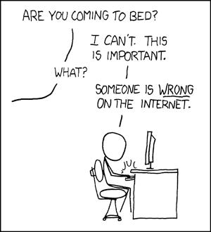
Quand je réagis
Quel est mon but ?
Quel impact aura mon propos ? Est-ce vraiment l’impact que je souhaite ?
Ai-je conscience du sens :
Locutoire (ce que je dis).
Illocutoire (ce que je sous-entends).
Perlocutoire (l’impact qu’auront mes propos).
Les bonnes nouvelles
Depuis 30 ans, comment a évolué la tolérance des Français ?
Comment a évolué la mortalité infantile dans le monde ?
N’oublions pas le changement de paradigme !
Avant, les Fake News et les théories du complot étaient totalement acceptées.
C’est notre prise de conscience qui les rend plus visibles en ce moment.
Prise de conscience des enjeux.
La connaissance est une arme ! Le fait de savoir ce qui est en jeu nous permet justement d’agir.
Merci !
Après la séanceAfter the session
Le bilan, les jeux, et votre retourSummary, games, and your feedback
Scannez ce QR code : vous pourrez donner votre retour, revoir le bilan de la formation ou rejouer aux jeux.Scan this QR code: you can leave your feedback, review the session summary, or play the games again.


![QR code vers la page antoninatger.github.io/interventions/retours]() antoninatger.github.io/interventions/retours →antoninatger.github.io/interventions/retours →
antoninatger.github.io/interventions/retours →antoninatger.github.io/interventions/retours →
Martine 🌻 @martine_lili · 1 h
Honteux !!! Mettre un monsieur de 82 ans à la rue… Ces belles-filles sont des p*******s sans cœur 🤬
Kévin @kev_du_94 · 1 h
Bande de s*****s. J'espère qu'elles vont tout perdre elles aussi
Sandrine B. @sandrine_b · 58 min
Le pauvre… 😢 Il a travaillé toute sa vie pour cette maison et ces deux c*******s le jettent dehors
Le Vrai Gaulois @vraigaulois · 55 min
Voilà la famille aujourd'hui. Plus aucun respect pour les anciens. Des o*****s, rien d'autre.
Juju @juju_off · 52 min
Moi à sa place je les déshérite direct ces m*****s 😤
Nathalie G. @nath_g62 · 50 min
Je pleure en voyant ça. Comment on peut faire ça à son beau-père ?? Elles n'ont aucune honte
Dédé du 13 @dede13 · 47 min
Qu'elles viennent me dire ça en face, les p*****s 👊
Sophie @sophie_75 · 44 min
Partagez un max !!! Il faut que tout le monde sache ce que ces v*******s ont fait 🔁
Thomas @thomas_lit · 41 min
Attendez, en fait, on n'a pas tous les éléments… Lisez ça avant de vous énerver 👇
francelive.fr/paul-82-ans-la-verite
Gégé @gerard_retraite · 39 min
Courage Paul ❤️ Et honte à ces deux c*******s, le karma va les rattraper
Lucas @lucas_33 · 35 min
Elles mériteraient d'être expulsées à leur tour, on verra si elles rigolent 😡
Karine 🐾 @karine_animo · 31 min
Dégoûtée de l'humanité. L'argent, toujours l'argent. Des r******s, ces bonnes femmes.
MaxPower @maxpower_off · 28 min
Quelqu'un a leurs noms ? Faut les afficher partout, ces s*****s 😠
Brigitte @brigitte_l · 25 min
Pauvre homme… 82 ans !! Où va le monde 😭😭